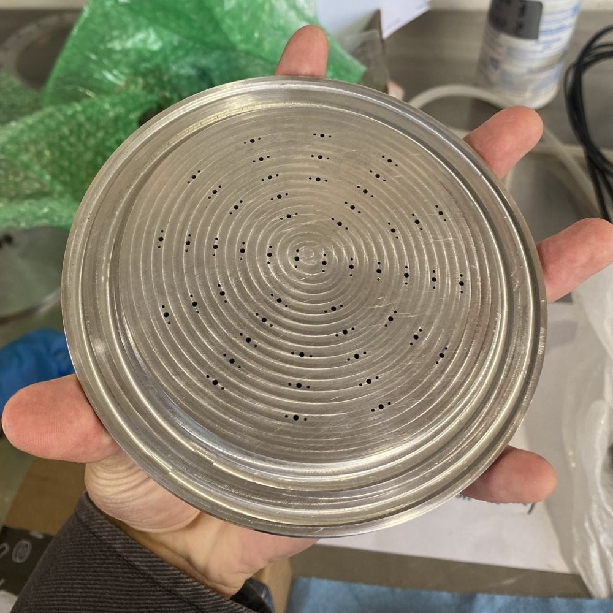

Design Work
Injector Redesign
After an unsuccessful hotfire caused by feed system and injector issues, I worked to redesign the injector to add additional seals to prevent interpropellant leakage and reconfigure passageways to allow for more distributed injection and prevent faceplate burn through. The new injector was designed, with some parts manufactured in house and others sent out for manufacturing, and was then hotfired. That hotfire ended in failure from an explosion driven by feed line contamination, while the injector itself performed as designed.

Tank Insulation
I designed and fabricated insulation for our cryogenic propellant tanks and overcame three main challenges:
- Budget. I reused existing aerogel, aluminum tape, and rope, and spent only $7 on styrofoam wrap, after ensuring a cryo-compatible design.
- Containing the aerogel. Aerogel dust is harmful to breathe, so the insulation had to fully conceal the aerogel and keep the dust out of the lab space.
- Easy removal. The insulation had to come off easily with the rocket on the launch rail, after the rocket was hoisted and the tanks were filled.

Main Valve Actuator Mounts
Our main valve actuators are external to the rocket to save weight. I created mounts to hold the pneumatic actuators outside the rocket to turn our main valves, and addressed two major challenges:
- Unknown valve locations. The exact location of the valves in the lower section had not been decided at the time of my work, so the design needed 4 degrees of freedom.
- Zero budget. I designed the mounts using only existing scrap metal.